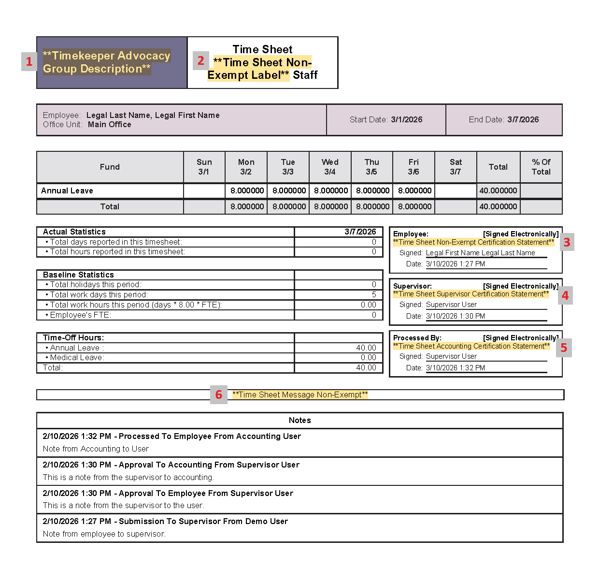

Home / Configuration Reference / Section: Time / Timekeeper Options
Timekeeper Options
Page Type: Settings Form (URL: https://dad3.ndrn.org/admin/admintimekeeperedit)
These settings are used to configure timekeeping functions and customize the the messages and labels on timesheets. All text settings are optional.
Timekeeper Options Form


-
Timekeeper Time Units (Dropdown):
- Minutes
- Quarters of an hour
- Tenths of an hour
-
Time Sheet Exempt Label (Long Text): Optional label to designate Exempt employee timesheet (replaces default "Exempt"). See #2 in Sample Timesheet.
-
Time Sheet Non-Exempt Label (Long Text): Optional label to designate Non-Exempt employee timesheet (replaces default "Non-Exempt"). See #2 in Sample Timesheet.
-
Time Sheet Message Exempt (Long Text - optional): Optional custom message that displays above Notes section Exempt employee timesheets. See #6 in Sample Timesheet.
-
Time Sheet Exempt Validation Message (Long Text - optional): Optional Validation Message text to display to Exempt Employees on Timesheet submission form.
-
Time Sheet Exempt Certification Statement (Long Text - optional): Optional Certification Message text to display for Exempt Employees on Timesheet submission form and PDF Timesheet. See #3 in Sample Timesheet.
Example: "I certify that these hours are a true and accurate record of all time worked during the pay period."
-
Time Sheet Message Non-Exempt (Long Text - optional): Optional custom message that displays above Notes section Non-Exempt employee timesheets. See #6 in Sample Timesheet.
-
Time Sheet Non-Exempt Validation Message (Long Text - optional): Optional Validation Message text to display to Non-Exempt Employees on Timesheet submission form.
-
Time Sheet Non-Exempt Certification Statement (Long Text - optional): Optional Certification Message text to display for Non-Exempt Employees on Timesheet submission form and PDF Timesheet. See #3 in Sample Timesheet.
Example: "I certify that these hours are a true and accurate record of all time worked during the pay period."
-
Time Sheet Supervisor Validation Message (Long Text - optional): Optional Validation Message text to display to Supervisor on Timesheet Review form.
-
Time Sheet Supervisor Certification Statement (Long Text - optional): Optional Certification Message text to display to Supervisor for Non-Exempt Employees on Timesheet review form and PDF Timesheet. See #4 in Sample Timesheet.
-
Time Sheet Accounting Validation Message (Long Text - optional): Optional Validation Message text to display to Accountant on Timesheet Processing form.
-
Time Sheet Accounting Certification Statement (Long Text - optional): Optional Certification Message text to display to Accountant for Non-Exempt Employees on Timesheet Processing form and PDF Timesheet. See #5 in Sample Timesheet.
-
Time Sheet Lock Out Period (Whole Number): Time window (in days) before which Time records can't be added, edited, or deleted. Example: If Time Sheet Lock Out Period is set to 30, users will be unable to add/modify/delete time entries with a Time Entry Date older than 30 days.
-
Allow SR Time Entries Outside of Open and Close Dates (Checkbox): If checked, users will be able to enter time for Service Requests with a date outside the Open and Close dates (i.e. when the SR was not open). If unchecked, users will get an error.
-
Allow Project Time Entries Outside of Open and Close Dates (Checkbox): If checked, users will be able to enter time for Projects with a date outside the Open and Close dates (i.e. when the Project was not open). If unchecked, users will get an error.
-
Include Employee Time Report On Archived (PDF) Timesheet (Checkbox): If checked, the final Archived PDF timesheet will contain the Time Report (list of individual time entries) following the timesheet.
-
Non-Exempt Work Day Hours (Decimal Number): This number defines a full time work day and is used in conjunction with the FTE (full time equivalent) setting for the employee (in their User record) to calculate the total numnber of work hours in the pay period. For agencies with a 40 hour workweek, this should be set to 8.
-
Timekeeper Start Of Week (Dropdown): Select the first day of the week for timesheet display. Typically set to Sunday or Monday.
-
Exempt Time Sheet Period Type (Dropdown): This setting controls the Start Date and End Date that an Exempt user will see when creating a new timesheet.
- Weekly
- Bi-Weekly
- Semi-Monthly
- Monthly
- Manual
-
Exempt Pay Period 1 Start Day (Whole Number): Displays for Semi-Monthly Period Type only; Calender start date for the first pay period in a month. This setting controls the Start Date that an Exempt user will see when creating a new Semi-monthly timesheet. This is typically set to 1.
-
Exempt Pay Period 2 Start Day (Whole Number): Displays for Semi-Monthly Period Type only; Calender start date for the second pay period in a month. This setting controls the Start Date that an Exempt user will see when creating a new Semi-monthly timesheet. This is commonly set to 15 or 16, to align with internal accounting requirements.
-
Non-Exempt Time Sheet Period Type: This setting controls the Start Date and End Date that a Non-Exempt user will see when creating a new timesheet.
- Weekly
- Bi-Weekly
- Semi-Monthly
- Monthly
- Manual
-
Non-Exempt Pay Period 1 Start Day (Whole Number): Displays for Semi-Monthly Period Type only; Calender start date for the first pay period in a month. This setting controls the Start Date that an Exempt user will see when creating a new Semi-monthly timesheet. This is typically set to 1.
-
Non-Exempt Pay Period 2 Start Day (Whole Number): Displays for Semi-Monthly Period Type only; Calender start date for the second pay period in a month. This setting controls the Start Date that an Exempt user will see when creating a new Semi-monthly timesheet. This is commonly set to 15 or 16, to align with internal accounting requirements.
-
Timekeeper Advocacy Group Description (Short Text - optional): Optional label for timesheet (replaces default Advocacy Group name). See #1 in Sample Timesheet.
Sample Timesheet
This sample timesheet shows how the text settings above appear in an individual timesheet.
